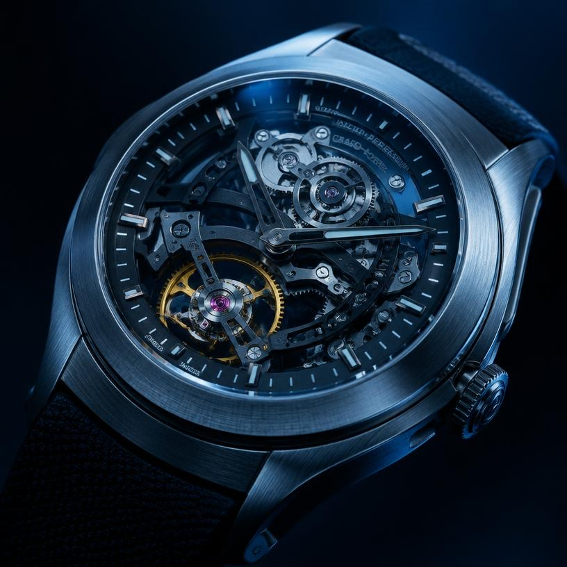

One watchmaker, one watch
Each watch is assembled and adjusted from start to finish by one person. The watchmaker's initials are engraved inside the case back.
About Aurum
Aurum started in 1911 as a single workshop. More than a century later we still build watches the same way: slowly, in small numbers and by hand.

Our founder opened the first Aurum workshop in 1911 with one aim: to make watches that could be worn every day and passed on to the next generation. The business has stayed in the same family ever since.
Today we make only a few hundred watches a year. Each one is designed, assembled and tested in our own workshop, and every customer deals directly with our boutique team.
You can view the full collection with prices and specifications, save watches to a wishlist and book a private viewing. After you log in, your account page shows all your bookings and their status.
Each watch is assembled and adjusted from start to finish by one person. The watchmaker's initials are engraved inside the case back.
Every visible part of the movement is bevelled and polished at the bench. We do not use machine finishing on any surface you can see.
Some watches are kept in stock at the boutique. The others are made to order, which usually takes 12 to 16 weeks.
“A good watch should outlast the person who first wears it.”Élise Aurum, fourth-generation owner
Book a free private viewing at our Pune boutique.